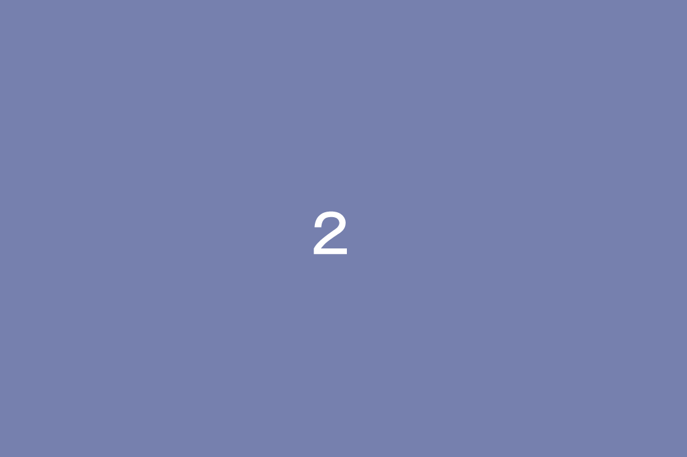
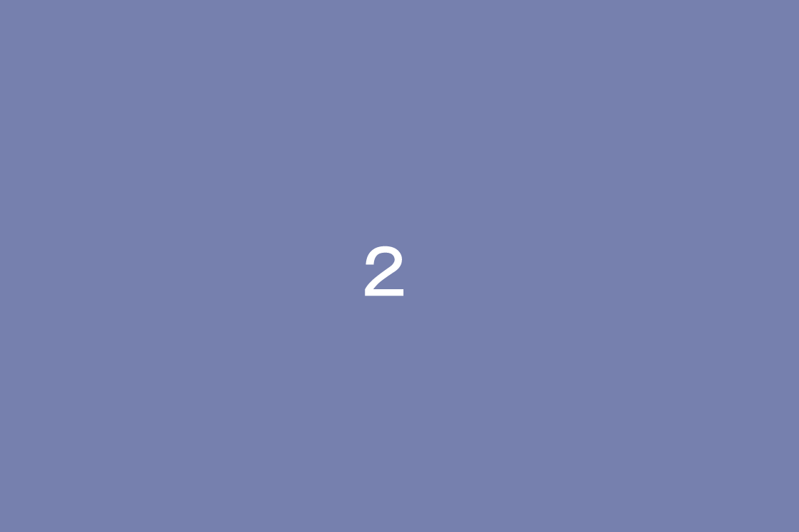

変わる つくる。
支える 広がる。
私たちは、サーバー業務を主軸にさまざまなモノの設計や構築、
運用保守から機器管理まで幅広い分野に取り組んでいます。
常に新技術を取り入れ、お客様のシステム環境をより快適なものとする
サポートを行っています。
 

BUSINESS
DETAILS
STGの特徴
Infra・Cloud
インフラ・クラウド
金融、公共機関のお客様のために、オンプレミス環境でのサーバー構築、
保守、運用などを行います。
また、日々進化するシステム環境に対応し、クラウドシステムに関す
る業務も担当しています。
近年はMicrosoft Azure や Amazon Web Service(AWS)
といったクラウドサービスを導入されるお客様が増えていることから、
安定したサービス提供のための支援は欠かせないものとなっています。
lot・AI・RPA
最先端のLoT、AI、RPAに取り組んでいます。
収集したデータ情報に基づいてアクションを実行するシステム、音声
認識や機械学習、
情報検索などのパターン情報を蓄積して成長していくAIシステム、
作業の自動化や生産性を向上させるロボットシステムなど。
このような仕組みの考案、作成とシステムテストの業務を主に担当し
ています。
少子高齢化により労働減少が進む中、需要の高い分野です。
System solution
システムソリューション
一般企業のお客様先にて、主にシステムに関わる問題や課題を解決す
るための業務を行います。
お客様のご相談を受けながら、最適なシステム製品の選定や導入、活
用までを支援していきます。
また、各メーカーのシステム製品に精通
したプロとして、導入したシステム全般の管理業務も担っています。

SEsupport
SEサポート
お客様先にて、SEやコンサルタントのサポートを中心とした業務を
行います。
一般事務やヘルプデスク等の窓口対応、ExcelVBA(マクロ)や
PowerShellなどを駆使した作業の効率化、
プロジェクト全体のスケジュール管理など、組織にとって「なくては
ならない専門業務」を担当しています。